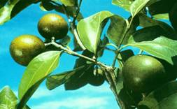
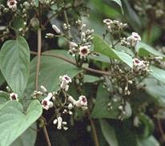
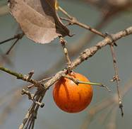
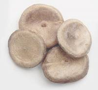
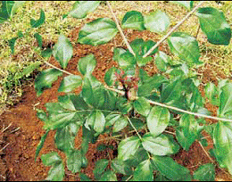

HORT 282 :: Lecture 29 :: NUX VOMICA

NUX VOMICA
Botanical Name: Strychnos nux-vomica Linn.
Family: Strychnaceae (Loganiaceae)
Common Names: Nux-vomica, Poison Nut, Snake-wood, Strychnine Tree, Quaker Buttons, Yetti (Tamil), Kanjiram (Malayalm)

Therapeutic uses
Its dried seeds or beans, and sometimes its bark (called nux vomica) are used in herbal remedies. The seeds contain organic substances, strychnine and brucine, that are used in herbal remedies. Dried seeds of kuchila are nervine, stomachic, and cardio-tonic, aphrodisiac, and respiratory stimulant. It is used as a remedy in chronic dysentery, paralytic and neuralgic disorders, epilepsy, rheumatic arthritis, and hydrophobia. In excessive doses, Strychnos is a virulent poison, producing stiffness of muscles and convulsions, ultimately leading to death. It is an important drug in all systems of medicine.
Morphological characteristics
Strychnos species is a medium-sized, deciduous tree, with fairly straight and cylindrical bole and dark-grey or yellowish-grey bark with minute tubercles. The nux vomica grows as tall as 49.2 ft (15 m). The nux vomica has roundish, opposite leaves and attractive white flowers. Leaves are simple, opposite, orbicular to ovate, 6–12 cm long and 6–10 cm broad, coriaceous, glabrous, and five-nerved.
Floral characteristics
Flowers of kuchila are white or greenish white and fragrant. They occur in many flowered terminal cymes. Calyx is five lobed, pubescent, and small, about 2 mm in size, while corolla is salver shaped and has five lobes. Corolla tube is cylindrical, greenish white inside and slightly hairy near the base. Stamens are five in number and have short filaments. The roughly spherical fruits of the nux vomica are large hard-rinded berries that contain three to eight round, flattened, grayish seeds. These seeds are covered with silky hairs, are known as strychnine nuts, and are hard and extremely bitter in taste. The seeds of the nux vomica contain several alkaloids that are useful for some purposes, particularly strychnine, and to a lesser extent brucine Fruit is an indehiscent berry, 5–6 cm in diameter, thick shelled, orange- red when ripe with fleshy pulp. Seeds are discoid, compressed, and coin like, concave on one side and convex on the other, and covered with fine grey silky hairs. Flowering occurs from March to May and fruits mature up to December.
Distribution
Strychnos nux-vomica is the name of an evergreen tree native to south East Asia, especially India and Myanmar, and cultivated elsewhere. The range of the nux vomica in cultivation extends from Sri Lanka, southern China, southeast Asia, and northern Australia. The species is indigenous to India and is distributed in moist deciduous forests throughout the tropical India
 |
 |
 |
Climate and soil
The plant can grow well in dry or humid tropical areas of the country. It grows over laterite, sandy, and alluvial soil
Propagation material
Seeds are the best material for propagation of kuchila plant. The collected seeds are dried in the sun after removing the pulp. Preferably, fresh seeds should be used. The plant can also be propagated through cuttings.
Nursery technique
Raising propagules
A nursery of the plant is raised in December or January in climatic conditions of South India. Seeds are sown in polybags of size 25 cm × 20 cm, filled with soil, sand, and FYM (farmyard manure) mixture. Seeds are directly sown in the polybags after appropriate pretreatment. The polybags are watered regularly so as to keep them moist. The seeds germinate in about 20–30 days. Sometimes the germination may continue up to 45 days. The seedling growth is very slow but roots grow very fast. For vegetative propagation, semi-hardwood cuttings can be prepared in early summer and kept under moist conditions after treating with commercially available rooting hormones. Rooting percentage is quite low, often less than 25%.
Propagule rate and pretreatment
About 1 kg seeds are required to raise 1 hectare of plantation. Seeds have low germination rate and fresh seeds of Strychnos nux-vomica lose viability early. Germination can be increased by treating the seeds with hot water (50 °C) for 6–12 hours prior to sowing.
Planting in the field
Land preparation and fertilizerapplication
The land is ploughed with disc harrow and tillers to achieve a fine tilth and make it weed-free and arable. Pits of size 45 cm × 45 cm × 45 cm are dug at a spacing of 5 m × 5 m and refilled with mixture of soil and manure in 1:1 ratio. Appropriate quantities of sand may be added if the soil is heavy. About 10 kg of well-rotten FYM is applied in each pit at the time of its refilling.
Transplanting and optimum spacing
In South India, the seedlings are transplanted with the onset of South-west monsoon in May or early June. An optimum spacing of 5 m × 5 m is recommended, which gives a stand of 400 trees per hectare. P Intercropping system The plant can be grown as a pure crop or herbaceous crops can be grown with it as intercrops after the first year.
Interculture and maintenance practices
About 10 kg of well-rotten FYM is mixed in the soil during refilling of pits before planting. Additional 10 kg manure may again be applied to the soil around the plants during October–November at the time of weeding. A total of 20 kg FYM/plant/year in subsequent years results in best growth of plants. This is to be applied in two split doses in June–July and September–October. Supplementary doses of inorganic fertilizers (NPK [nitrogen, phosphorus, and potassium]) do not lead to any significant additional growth in the young plantations. The area around the basin of the plant should be kept weed-free by frequent weeding. The interspaces can be kept weed-free by hand weeding or spraying of herbicides like 0.8% paraquat or 0.4% Glyphosate.
Irrigation practices
The crop needs no irrigation during the rainy season and in dry weather; saplings may be irrigated on alternate days, especially in the early years of growth. For matured trees, irrigation by ring method around tree base at a distance of 30 cm during summer months is beneficial.
Disease and pest control
No significant pest or disease is observed on the crop.
Harvest management
Crop maturity and harvesting
The tree has a long span of life, that is, 50–60 years. It takes about 15–20 years for the tree to initiate flowering. The seeds are collected December onwards when they mature. Fruits can be harvested periodically for many years.
Post-harvest management
Mature fruits are manually collected and seeds from them are extracted, washed, dried in shade, and stored for trade.
Chemical constituents
Strychnine and brucine are two most important and toxic alkaloids present in the seeds (0.4% and 0.6%, respectively). Other parts of tree have varying percentages of these two alkaloids— 1.7% and 2.8% in root bark, 0.3% and 0.4% in root-wood, 0.9% and 2.1% in stem-bark, 0.5% and 0.01% in stem-wood, and 0.2% and
0.5% in leaves, respectively.
Yield and cost of cultivation
Considering a crop stand of 400 plants per hectare and average produce range of 50–75 kg of dry seeds per tree per year, a yield of 12–20 tonnes/hectare is estimated from a 20-yearold plantation annually. The estimated cost of raising 1 hectare plantation in the first year is Rs. 100 000 only, while an amount of approximately Rs. 6500 per hectare is incurred per year in subsequent years.
Use
In herbal medicine, Strychnos nux-vomica is recommended for liver cancer, upset stomach, vomiting, abdominal pain, constipation, intestinal irritation, hangovers, heartburn, insomnia, certain heart diseases, circulatory problems, eye diseases, depression, migraine headaches, nervous conditions, problems related to menopause, and respiratory diseases in the elderly. What does it involve?
The seeds of the Strychnos nux-vomica tree are removed from the ripened berries of the tree and dried in the sun. Sometimes they are heated or further processed, which may reduce the amount of poison in the seeds. Various herbal preparations are made from the dried seeds, including tablets, liquid extracts, and tinctures.
- Nux vomica belongs to the family ____________
- Alkaloid present in Nux vomica is ____________
- Nux vomica can be used against ____________
- Economic part of nux vomica ____________
- Botanical name of nux vomica is ____________
| Download this lecture as PDF here |